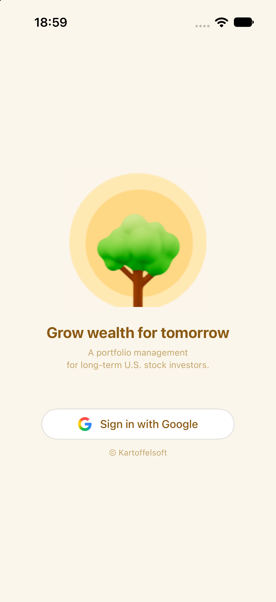
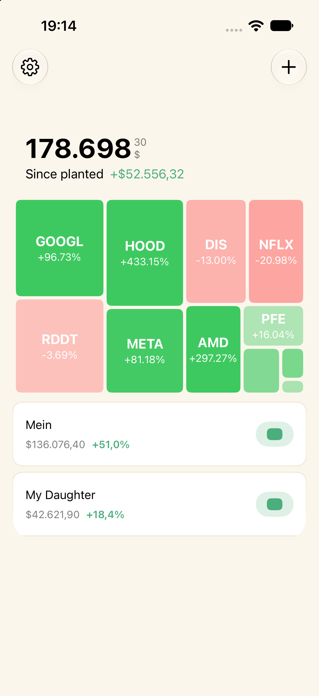
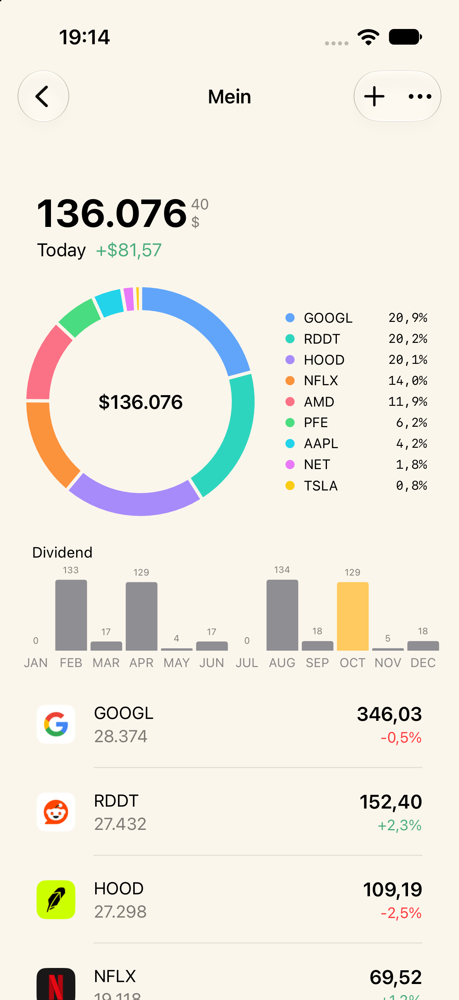
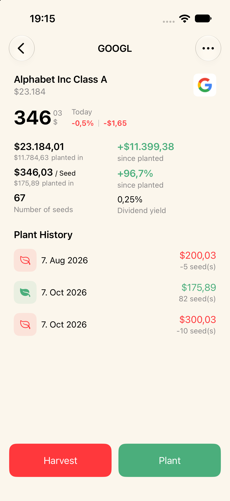

Investing in stocks is like growing a garden. You plant your investments, watch them grow, and take care of them over time.
Garden100 is a simple portfolio monitoring app for US stocks. Create your own portfolios, keep an eye on your investments, and enjoy watching your financial garden grow.
I originally created Garden100 for my family — one portfolio for me and one for my daughter. It is designed for monitoring and learning, rather than buying or selling stocks.
Garden100 uses Google Sheets to store your portfolio information. Your portfolio data stays in your own Google Sheet.
Our servers do not store your portfolio information. We only provide additional information that makes the app useful, such as dividend data, company information, and stock search.
We don't collect your portfolio data.
Create a portfolio in Garden100. Your portfolio and financial data are stored in your own Google Sheet.
Garden100 reads the data from your Google Sheet and turns it into an easy-to-use portfolio view, helping you monitor your investments over time.
Your data stays in your Google Sheet.
:::Create your portfolio

Track your stocks

Check company information

Watch your garden grow

We wanted your portfolio to remain under your control. That's why your portfolio is stored in your own Google Sheet instead of on our servers.
You can see and manage your data yourself, using a familiar tool that you already know.
Garden100's server provides additional information that would be difficult to maintain entirely inside the app.
This includes information such as:
Dividend information
Company information
Stock and company search
Other miscellaneous market information
Your personal portfolio is not stored on our server.